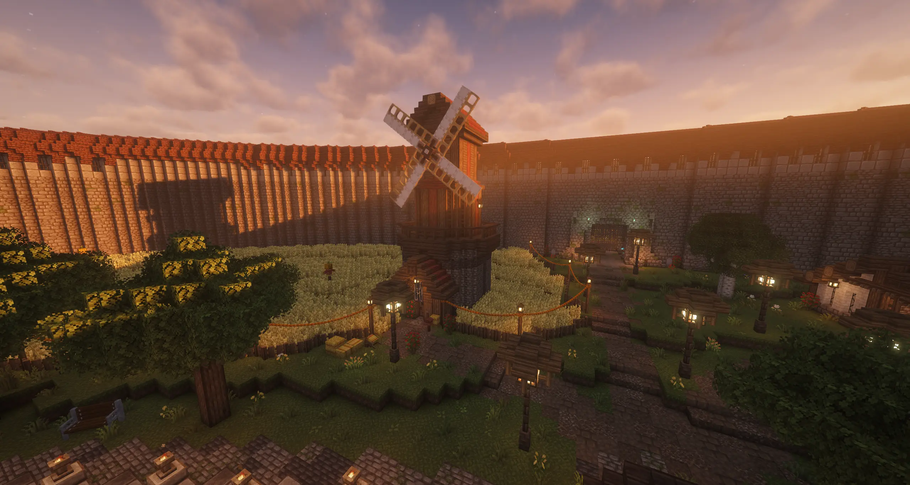
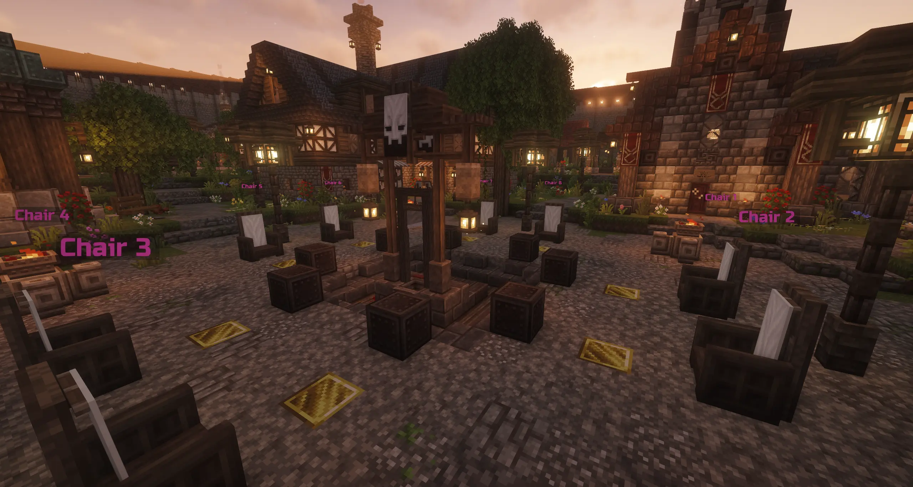

A social deduction game in Minecraft.

I am hosting and developing a custom Blood on the Clocktower experience all within Minecraft, recreating the game’s tense social deduction, nominations, and executions using advanced command systems and immersive builds.
From fully functional voting mechanics to custom storytelling tools, I focus on making every game feel smooth, dramatic, and faithful to the original experience while taking advantage of what Minecraft can uniquely offer.
I’m also always designing original scripts, automated gameplay systems, and interactive role mechanics that allow up to 8 players to enjoy complex social deduction games directly inside Minecraft with proximity chat and live moderation.

Interested in joining the game? Use the Discord link below to become part of the community, stay updated on upcoming sessions, and get access to the modpack and server information.
Most sessions are hosted at Sunday 1:00 PM Sydney Time , though additional games and events may occasionally be scheduled throughout the week.
We’re a fairly small, close-knit community that enjoys immersive social deduction games, and we’re always happy to welcome new players regardless of experience level.
Please note that the server uses a moderately large modpack, so a reasonably powerful PC is recommended for the best experience and stable performance.